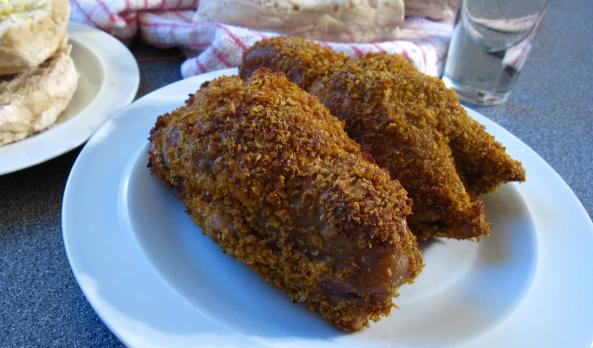
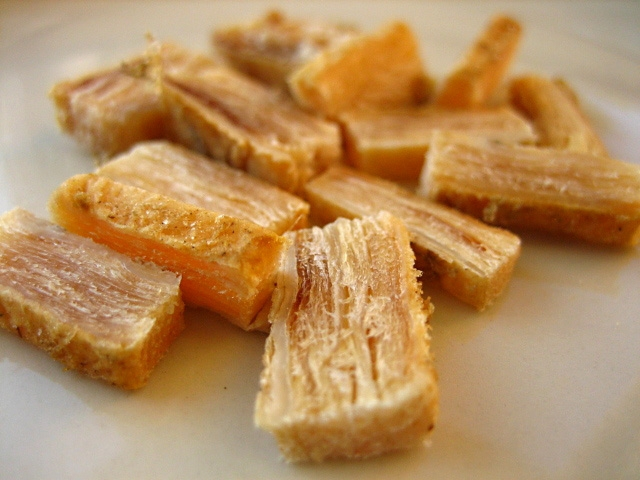
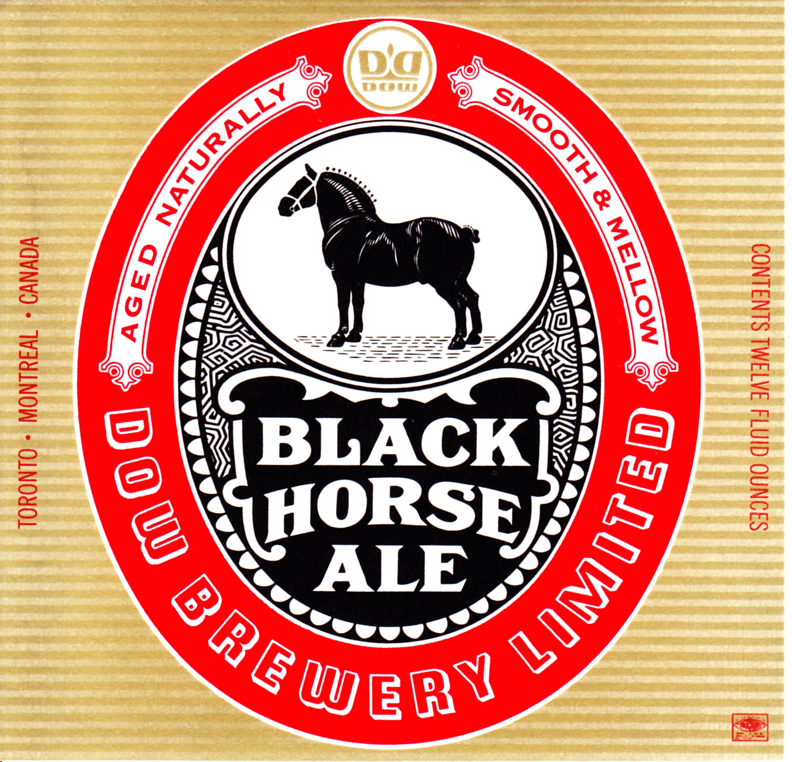

Newfoundland And Labrador Food and Drink
The province boasts a hearty cuisine.
Specialities:
- Dishes make full use of fat pork, molasses, salt fish, salt meat, boiled vegetables and soups.
- Crubeens (Irish pickled pigs' feet).
- Cod made into stews and fish cakes, or eaten fried, salted, dried or fresh - often
with scrunchions, crunchy bits of fried fat pork. Salmon, trout and halibut are also available.
- Brewis is a hard water biscuit that needs soaking in water to soften, then gentle
cooking; damper dog is a type of fried bread dough.
- Jigg's dinner (a mixture of salt beef, potatoes, carrots, cabbage and turnips) with pease
pudding, a traditional family meal.
Regional drinks:
Available brews include Black Horse, Jockey Club and Dominion Ale, and a variety of ales from Newfoundland-based
Storm Brewing (including a hemp ale, a raspberry wheat ale and a coffee porter).
Screech is Jamaican-style rum that is the historic result of trade between Newfoundland and
Jamaica (Jamaica got salt cod in return).
Tea and Carnation milk.



Crubeens
6 pig's trotters (feet), from the hind legs
1 onion stuck with 6 cloves
1 carrot
1 bay leaf
12 peppercorns
Salt
1 bunch parsley
1 sprig thyme
Combine pig's feet, onion, carrot, bay leaf, peppercorns, salt, parsley, and thyme in a heavy pot or Dutch oven and pour
in water to barely cover all.
Gently bring contents to a boil. Reduce heat and simmer for at least 3 hours.
Crubeens may be eaten hot or cold.
Yield: 2 servings
Blackhorse Stew
5 boneless pork chops, cut into cubes
2 tablespoons all-purpose flour
1/2 pound bacon, diced
1 large onion, diced
3 tablespoons paprika
1 (12 fluid ounce) can or bottle beer
1 (14.5 ounce) can sauerkraut, drained
Preheat oven to 350 degrees F (175 degrees C).
Toss pork and flour together in a bowl to coat.
Place bacon in a large skillet and cook over medium-high heat until enough fat renders to coat the bottom of the pan;
add pork and onion. Cook and stir the mixture until completely browned, about 10 minutes. Drain about half the grease from the
skillet and return to heat.
Season mixture with paprika; stir. Pour beer over the pork mixture, bring to a simmer, and cook 5 minutes.
Spread sauerkraut into the bottom of a casserole dish. Pour pork mixture over the sauerkraut. Cover dish with aluminum foil.
Bake in preheated oven for 45 minutes.